Economía Internacional — Clase 7
Intercambio desigual, ventajas dinámicas y capacidades tecnológicas
28 de mayo de 2026
UMET - Licenciatura en Economía | 2026
Lo que dejamos en S6
Prebisch nos dejó un diagnóstico — hoy vemos tres profundizaciones
- Centro-periferia (Prebisch, CEPAL): el comercio internacional funciona dentro de estructuras productivas asimétricas
- Tesis Prebisch-Singer: los términos del intercambio se deterioran contra los productores primarios
- Tres mecanismos: elasticidades, competencia entre productores, sustitución tecnológica
- Implicancia política: la periferia necesita industrializarse y un Estado activo (ISI)
- Pero quedaron preguntas abiertas: ¿solo es un problema de precios? ¿qué pasa con los salarios? ¿cómo se construyen capacidades industriales? ¿qué pasa con la tecnología?
¿Qué vamos a ver hoy?
- Bloque bisagra: ¿Qué problemas dejan abiertos las teorías anteriores?
- Bloque 1 — Emmanuel: intercambio desigual y transferencia de valor por salarios
- Bloque 2 — Ventajas dinámicas: List, Kaldor, learning by doing + casos Corea/Tigres, Brasil-Embraer, Argentina-INVAP
- Bloque 3 — Neoschumpeterianos: capacidades tecnológicas, EXPY (Hausmann), complejidad económica (Hidalgo-Hausmann), desindustrialización prematura (Rodrik)
- Bloque 4 — Comercio, tecnología y poder: geopolítica tecnológica + caso semiconductores
- Cierre integrador U4: mapa heterodoxo, tabla "¿quién gana?", síntesis "el comercio construye trayectorias"
Bloque bisagra
¿Qué problemas dejan abiertos las teorías anteriores?
¿Qué problemas dejan abiertos las teorías anteriores?
Cada teoría agrega una dimensión nueva — no se reemplazan, se acumulan
- Ricardo / H-O dejan abierto: ¿qué pasa cuando los países NO tienen las mismas tecnologías ni capacidades?
- Krugman / Melitz dejan abierto: el comercio de manufacturas con manufacturas ya no es entre países similares — los productos también difieren en complejidad
- Prebisch deja abierto: el problema no se reduce a precios → también hay salarios asimétricos, path dependence y capacidades tecnológicas
- Hoy abrimos tres respuestas estructuralistas y dinámicas:
- Emmanuel: la transferencia de valor por salarios (no solo precios)
- List / Kaldor / Diamand: las ventajas se construyen con aprendizaje e industria
- Cimoli / Porcile / Hidalgo-Hausmann: el desarrollo depende de capacidades tecnológicas acumuladas
Bloque 1 — Intercambio desigual
¿Por qué el comercio Norte-Sur transfiere valor del Sur al Norte?
Arghiri Emmanuel (1911-2001)
El economista marxista que radicalizó a Prebisch
- Origen: griego, exiliado en Francia tras la Segunda Guerra y la Guerra Civil griega
- Obra principal: L'échange inégal (1969) — "El intercambio desigual"
- Tradición: marxista heterodoxo — diálogo con Samir Amin, André Gunder Frank, Immanuel Wallerstein
- Idea central: el problema del comercio Norte-Sur no es solo el precio — son los salarios asimétricos lo que reproduce la transferencia de valor
- Cita memorable: "Los pobres son pobres no porque producen poco, sino porque les pagan poco por lo que producen."
¿Por qué los salarios asimétricos generan transferencia de valor?
La pieza que Prebisch no completó
- Punto de partida: en el comercio internacional los bienes se mueven libremente pero el trabajo NO
- Consecuencia: los salarios pueden ser radicalmente distintos entre países para tareas equivalentes
- Cuando un país de salarios bajos exporta, exporta mucho trabajo barato incorporado en cada producto
- Cuando un país de salarios altos exporta, exporta menos horas pero esas horas valen más en el mercado
- Resultado: el comercio Norte-Sur transfiere valor de los países de salarios bajos a los de salarios altos, incluso cuando los precios son los del mercado mundial
La brecha salarial en manufactura es ENORME
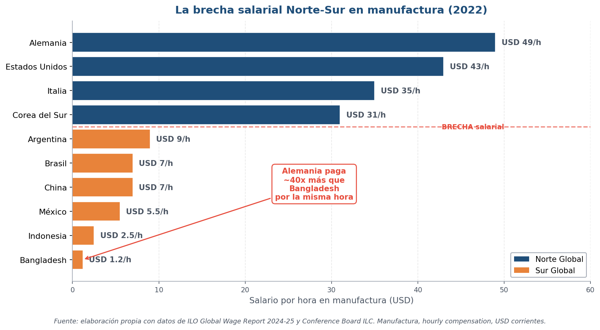
Fuente: ILOSTAT (OIT) + US BLS International Comparisons, 2023
- Alemania, EEUU: 40-50 USD/h en manufactura
- México, Brasil: 3-5 USD/h (10x menos que Alemania)
- Vietnam, India: 1-2 USD/h
- Bangladesh: 1.2 USD/h (40x menos que Alemania)
- Lectura clave: no es 2x o 3x — es 30x, 40x. Esta brecha es lo que sostiene la fragmentación de la producción mundial
El drenaje neto del Sur al Norte (1990-2015)
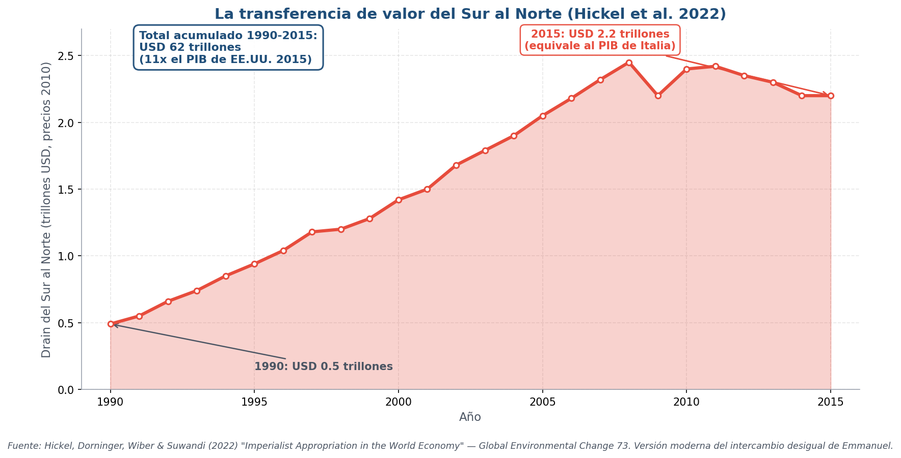
Fuente: Hickel, J., Sullivan, D., Zoomkawala, H. (2022) "Plunder in the Post-Colonial Era", New Political Economy.
- Pregunta: ¿cuánto valor transfiere el Sur al Norte vía comercio desigual?
- Metodología Hickel: descontando la diferencia entre los precios pagados y los costos laborales equivalentes a salarios del Norte
- Resultado 1990-2015: drenaje neto acumulado de USD 62 trillones (12% del PIB anual del Norte se origina en valor del Sur)
- Implicancia: la ayuda al desarrollo del Norte al Sur es 30 veces menor que el drenaje en la otra dirección
- Sigue siendo controvertido: críticas metodológicas (¿qué precio "justo"?), pero el patrón es robusto en distintas mediciones
La geografía del intercambio desigual
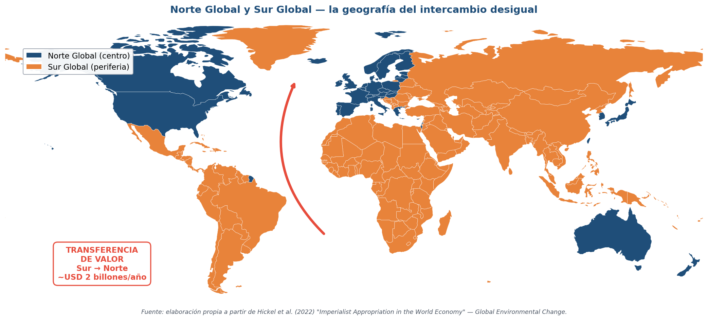
Fuente: Clasificación Norte-Sur basada en Wallerstein (1974) "Modern World-System" + criterios UNCTAD.
- Norte global: América del Norte, Europa Occidental, Japón, Corea, Australia, Nueva Zelanda
- Sur global: América Latina, África subsahariana, Asia (excepto Japón/Corea), Oceanía
- Casos en transición: China (Norte en parte, Sur en parte), Europa del Este, países petroleros del Golfo
- Lectura: la frontera Norte-Sur no es solo Norte/Sur geográfico — es una división estructural-productiva
Bloque 2 — Ventajas dinámicas
¿Las ventajas comparativas son destino, o se pueden construir?
¿Las ventajas comparativas son un destino?
- Si Ricardo y H-O tuvieran razón → cada país queda atrapado en lo que sabe hacer
- Argentina nunca podría producir aviones, Corea nunca podría producir Hyundai, Vietnam nunca podría exportar electrónica
- Pero pasó al revés: muchos países cambiaron radicalmente su especialización
- La clave es entender que las ventajas se construyen — la próxima pregunta es cómo
Friedrich List (1789-1846)
La industria infante necesita protección temporaria
- Origen: economista alemán, escribió en el contexto del retraso industrial alemán frente a Inglaterra
- Obra clave: Sistema Nacional de Economía Política (1841)
- Crítica a Ricardo: la ventaja comparativa congela las posiciones — Alemania jamás se industrializaría si seguía a Ricardo
- Argumento de la industria infante: una industria nueva necesita protección temporaria mientras aprende y alcanza escala
- Frase memorable: "El libre comercio es bueno cuando ya se ganó la carrera; los británicos lo prediquen ahora que llegaron primero."
Las tres leyes de Kaldor
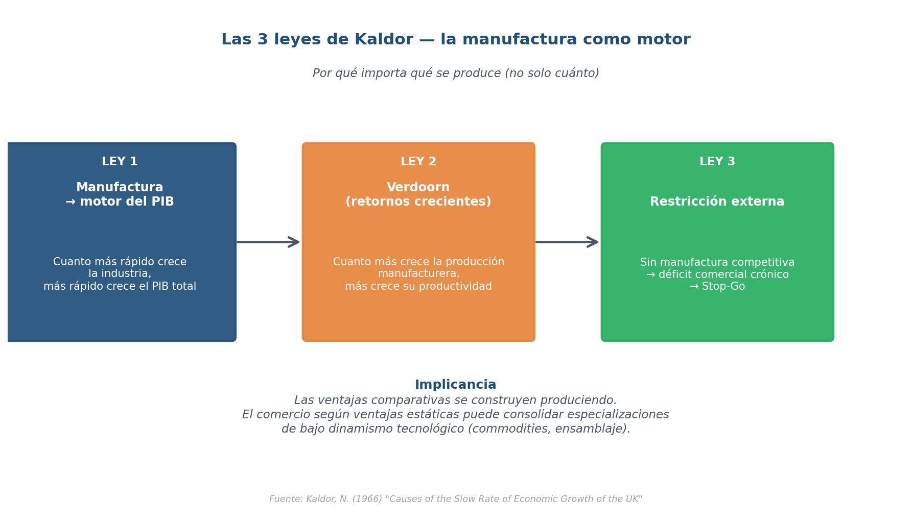
Fuente: Kaldor, N. (1966) "Causes of the Slow Rate of Economic Growth of the United Kingdom"; Thirlwall (1983) "A Plain Man's Guide to Kaldor's Growth Laws".
- Ley 1: a más crecimiento de la industria → más crecimiento del PIB total
- Ley 2 (Verdoorn): a más crecimiento de la industria → más crecimiento de la productividad industrial (rendimientos crecientes dinámicos)
- Ley 3: la industria "tira" de los demás sectores (agricultura, servicios) con la demanda
- Conclusión: NO es lo mismo crecer 5% por minería que 5% por industria → la industria genera círculo virtuoso (aprendizaje + escala + arrastre)
Marcelo Diamand (1923-2007)
El stop-go argentino — Kaldor aplicado a Latinoamérica
- Origen: ingeniero y economista argentino, hijo de inmigrantes polacos, productor industrial
- Obra clave: Doctrinas económicas, desarrollo e independencia (1973)
- Diagnóstico: la estructura productiva desequilibrada argentina genera ciclos stop-go
- Mecanismo del stop-go:
- El sector primario (agro) es competitivo internacionalmente
- La industria NO es competitiva al tipo de cambio del agro
- Cuando se intenta industrializar → escasez de dólares → devaluación → freno → "stop"
- Recuperación → vuelve la demanda de importaciones → escasez → otra crisis
- Solución que propone: tipos de cambio múltiples o efectivos (retenciones al agro, subsidio a la industria)
La gran convergencia de los Tigres asiáticos
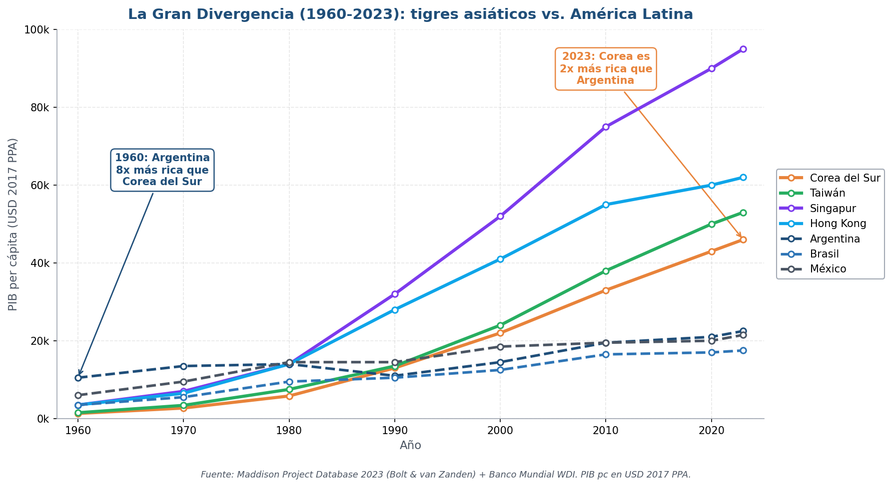
Fuente: Maddison Project Database 2023 + Banco Mundial WDI.
- 1960: Corea del Sur era más pobre que Argentina, Brasil y México
- 2023: Corea del Sur tiene PIB per cápita superior a Italia, España y Portugal
- Mismo período: Argentina, Brasil y México crecieron poco — la convergencia no fue universal
- Lectura clave: el "milagro asiático" muestra que la convergencia es posible — pero no automática
Los Tigres asiáticos en el mapa
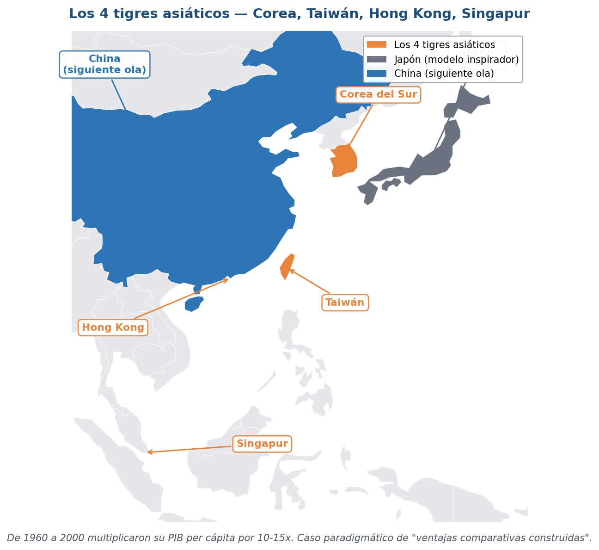
Fuente: Natural Earth + Banco Mundial. Tigres asiáticos: Corea del Sur, Taiwán, Singapur, Hong Kong.
- Corea del Sur: 52 millones de habitantes, electrónica, autos, química, barcos
- Taiwán: 23 millones, semiconductores (TSMC), informática
- Hong Kong: 7 millones, finanzas y servicios
- Singapur: 6 millones, finanzas, refinación, electrónica
- Después llegaron los "Tigres Cubs": Tailandia, Malasia, Vietnam, Filipinas
Corea: 60 años de upgrading exportador
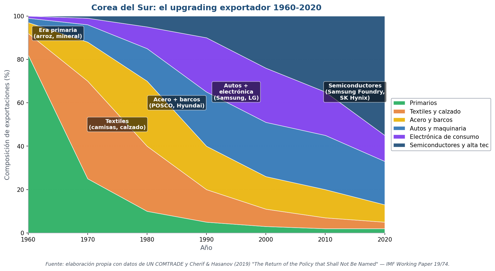
Fuente: Banco Mundial WDI + Korea International Trade Association (KITA) + Hausmann et al., Atlas of Economic Complexity.
- 1960-1970: textiles, pelucas, productos del mar, calzado
- 1970-1980: barcos, acero, productos químicos básicos
- 1980-1990: autos, electrónica básica, electrodomésticos
- 1990-2010: semiconductores, pantallas planas, telecom (Samsung, LG)
- 2010-2024: semiconductores avanzados, baterías para EVs, K-pop y contenidos culturales
- Cada salto: protección + financiamiento + metas exportadoras + apertura selectiva → aprendizaje progresivo
Sudamérica: dos casos contrastados de industrialización
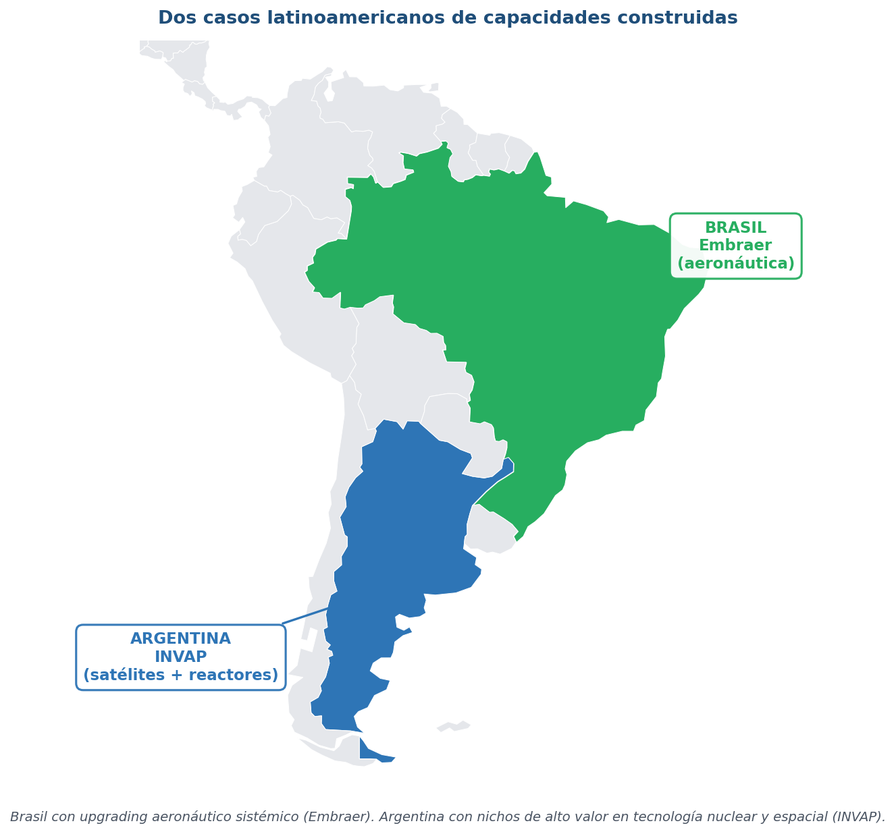
Fuente: Natural Earth. Embraer: São José dos Campos (São Paulo). INVAP: Bariloche (Río Negro).
- Brasil — Embraer (São José dos Campos): tercer fabricante mundial de aviones comerciales, exporta a 100+ países
- Argentina — INVAP (Bariloche): reactores nucleares de investigación, satélites — única empresa latinoamericana certificada OIEA Cat. A
- Lo común: capacidades tecnológicas construidas con décadas de inversión estatal y articulación pública-privada
- Lo distinto: Brasil escaló (10.000+ empleados, líder global); Argentina se quedó en nicho (1.500 empleados, líder regional)
Embraer: del Estado al líder global
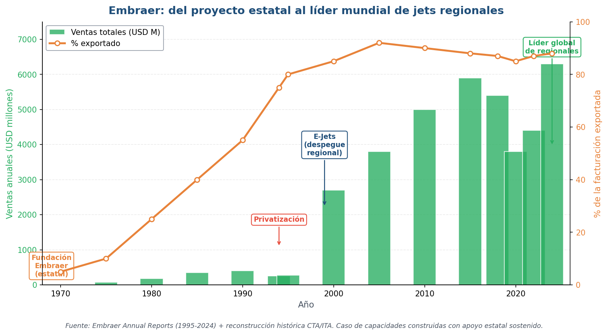
Fuente: Embraer S.A. annual reports + Aeroflap Brasil. Bloomberg/Reuters para datos recientes.
- 1969: fundada como empresa estatal en plena dictadura militar — programa aeroespacial nacional
- 1985-1994: pierde plata; el Estado la sostiene hasta privatización en 1994
- 1999: lanza el E-Jet (regional 70-120 pasajeros) → éxito comercial mundial
- 2024: tercer fabricante mundial de aviones comerciales (después de Boeing y Airbus); más del 90% de sus ventas son exportaciones
- Lo que muestra: capacidades aeroespaciales en un país en desarrollo son posibles — pero requirieron paciencia estatal de varias décadas
INVAP: 50 años de capacidades nucleares y satelitales argentinas
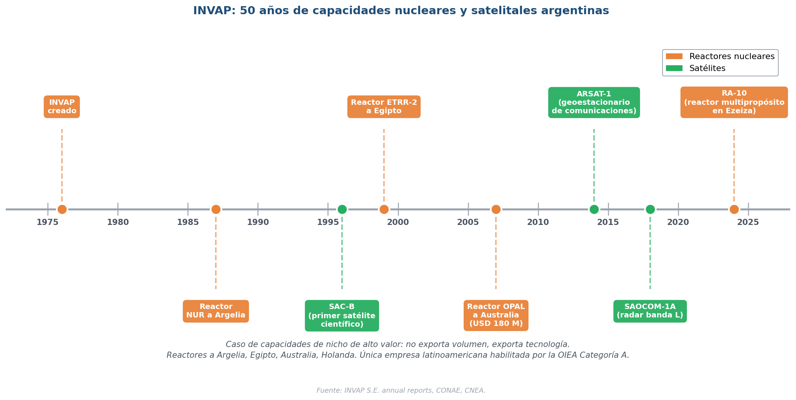
Fuente: INVAP S.E. annual reports + CONAE + CNEA + Hurtado (2010) "La ciencia argentina".
- 1976: fundada en Bariloche, articulada con el Centro Atómico Bariloche y la CNEA
- Reactores exportados: a Argelia (NUR, 1987), Egipto (ETRR-2, 1999), Australia (OPAL, 2007 — USD 180 M), Holanda (PALLAS, en curso)
- Satélites construidos: SAC-B (1996, primer satélite científico argentino), ARSAT-1 (2014, geoestacionario), SAOCOM-1A (2018, radar banda L)
- 2024: RA-10, reactor multipropósito en Ezeiza, en operación
- Lo que muestra: Argentina TIENE capacidades de alta tecnología en nichos específicos — pero no logró escalar el modelo a otros sectores
Bloque 3 — Capacidades tecnológicas
¿Qué hace que un país sea más complejo que otro?
Cimoli, Porcile y la tradición neoschumpeteriana
Joseph Schumpeter (1883-1950) actualizado para el comercio Norte-Sur
- Schumpeter: la innovación es el motor del capitalismo — destrucción creativa
- Tradición neoschumpeteriana: Christopher Freeman, Carlota Pérez, Giovanni Dosi, Bengt-Åke Lundvall (1980s+)
- Versión latinoamericana: Mario Cimoli (CEPAL), Gabriel Porcile (UFPR-CEPAL), Luiz Carlos Bresser-Pereira
- Idea central: las diferencias entre países NO son por dotaciones de factores → son por capacidades tecnológicas acumuladas
- Concepto clave: brecha tecnológica entre centro y periferia → reproduce intercambio desigual
EXPY — cómo se mide la sofisticación de la canasta exportadora
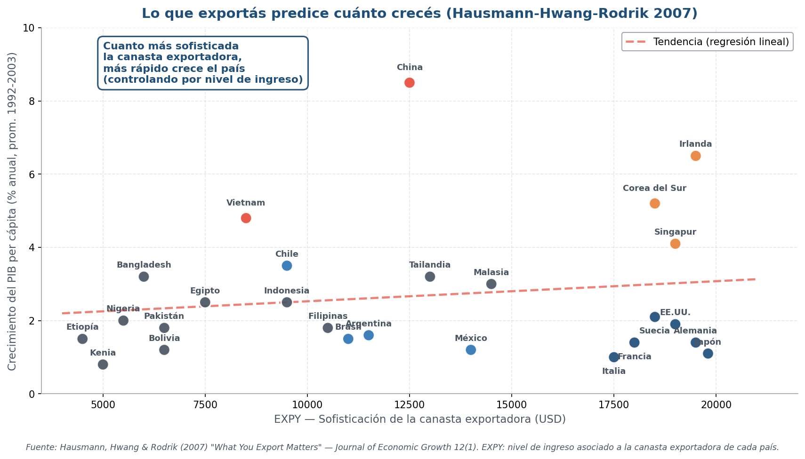
Fuente: Hausmann, R., Hwang, J. & Rodrik, D. (2007) "What You Export Matters", Journal of Economic Growth 12(1). Datos: UN COMTRADE (SITC-4 dígitos, ~775 productos) + PIB per cápita PPP del WDI/Penn World Tables.
- Quién lo construye: Ricardo Hausmann (Harvard), Jason Hwang (Princeton) y Dani Rodrik (Harvard) — 2007
- Qué mide: el nivel de ingreso (PIB pc PPP) asociado a la canasta exportadora de un país — unidad: dólares PPP
- Cómo se construye — paso 1 (PRODY por producto k): \(PRODY_k = \sum_j \dfrac{(x_{jk}/X_j)}{\sum_i (x_{ik}/X_i)} \cdot Y_j\) — promedio del PIB pc de los países que exportan k, ponderado por su ventaja comparativa revelada
- Cómo se construye — paso 2 (EXPY del país j): \(EXPY_j = \sum_k \dfrac{x_{jk}}{X_j} \cdot PRODY_k\) — promedio del PRODY de los productos en la canasta del país
- Datos: ~80 países, comercio 1992-2003 (UN COMTRADE), PIB pc PPP (PWT/WDI)
- Resultado del paper: a mayor EXPY → mayor crecimiento posterior del PIB pc (controlando por nivel inicial, capital humano, instituciones)
Hidalgo y Hausmann: la complejidad económica
Atlas of Economic Complexity (Harvard Growth Lab) — 2009
- Pregunta: ¿qué hace que un producto sea más "complejo" que otro?
- Idea: la complejidad NO está en el bien — está en las capacidades necesarias para producirlo
- Medición: un producto es complejo si pocos países lo exportan y los que lo hacen son diversos (exportan muchas cosas distintas)
- ECI (Economic Complexity Index): ranking de países según la sofisticación de su canasta exportadora
- PCI (Product Complexity Index): ranking de productos
- Resultado robusto: el ECI predice crecimiento futuro mejor que el nivel actual de ingreso, mejor que el capital humano, mejor que la inversión
La complejidad económica en el mundo (2022)
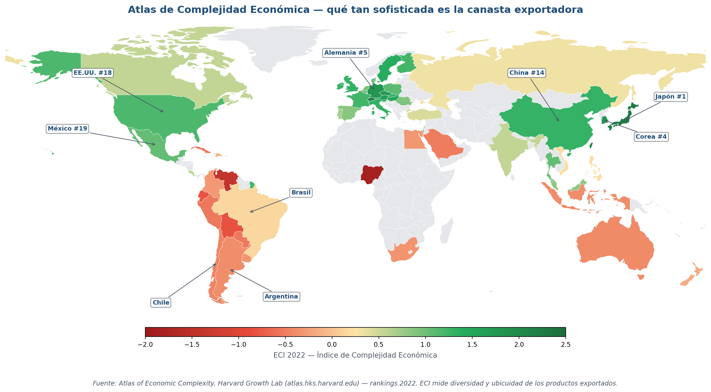
Fuente: Atlas of Economic Complexity, Harvard Growth Lab (atlas.hks.harvard.edu/rankings) — 2022.
- Verde oscuro (ECI alto): Japón, Corea, Alemania, Suiza, Singapur, Taiwán, R. Checa
- Verde claro (ECI medio): EE.UU., UK, China, gran parte de Europa Occidental y central
- Naranja (ECI bajo): Argentina, Brasil, gran parte de Latinoamérica, Asia Central
- Rojo (ECI muy bajo): África subsahariana, países petroleros del Golfo
- Lectura: el mapa de complejidad replica casi perfectamente el mapa Norte-Sur — pero con matices interesantes (R. Checa, Hungría, Polonia más complejas que esperado)
Ranking ECI 2022 — los top mundiales vs. América Latina
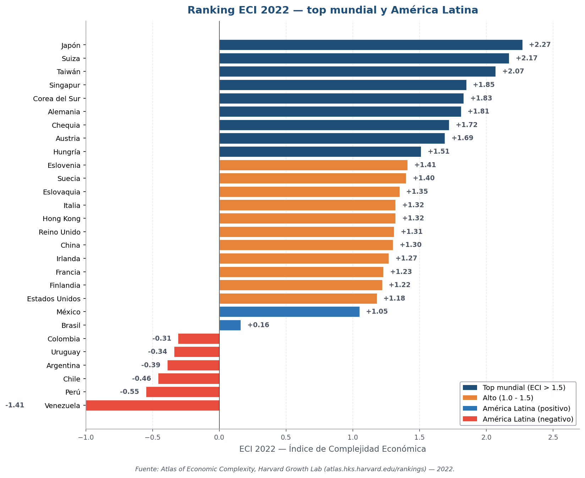
Fuente: Atlas of Economic Complexity, Harvard Growth Lab (rankings 2022).
- Top 5 mundial: Suiza, Alemania, Japón, Corea del Sur, Singapur (ECI > 2.0)
- Top 20 incluye: Taiwán, EE.UU., R. Checa, Suecia, China (#19), Hungría
- América Latina: México (puesto 22), Costa Rica (#41), Brasil (#56), El Salvador, Uruguay
- Argentina: puesto 78, ECI = -0.39 (negativo)
- Lo que muestra: Argentina está por debajo del promedio mundial — y bastante por debajo de México y Brasil
La Gran Divergencia de las trayectorias de complejidad
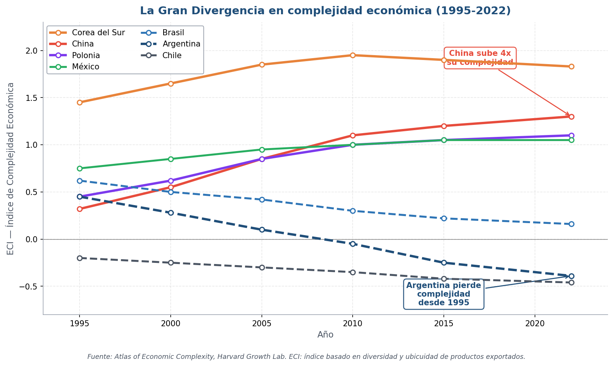
Fuente: Atlas of Economic Complexity, Harvard Growth Lab — serie histórica ECI 1995-2022.
- Corea: ECI sube de 1.6 a 2.0 (consolida posición top 5)
- China: ECI sube de 0.3 a 1.3 → multiplica por 4 su complejidad
- Polonia: ECI sube de 0.5 a 1.4 (integración a cadenas alemanas)
- México: estable, alto para Latam
- Brasil: estable, ECI bajo
- Argentina: cae de 0.2 a -0.4 → pierde complejidad
- Chile: estable, ECI bajo
- Lectura: la complejidad no es destino — algunos la construyen, otros la pierden
Dani Rodrik (2016): la desindustrialización prematura
Los países en desarrollo se están desindustrializando ANTES de industrializarse
- Rodrik (2016) "Premature Deindustrialization": los países en desarrollo se desindustrializan a niveles de ingreso mucho más bajos que los desarrollados en su momento
- Reino Unido llegó al peak industrial con USD 14.000 per cápita (precios actuales). Brasil con USD 5.000. Argentina con USD 8.000.
- Causas:
- Competencia china (offshoring masivo desde 2001)
- Automatización (menos empleo industrial por unidad de producto)
- Apertura comercial sin política industrial
- Implicancia política: si se desindustrializan demasiado pronto → pierden la "ventana" kaldoriana → quedan atrapados en servicios de baja productividad
Bloque 4 — Comercio, tecnología y poder
¿Por qué la geopolítica volvió al centro del comercio internacional?
Comercio, tecnología y poder
Del comercio internacional a la geopolítica tecnológica
- El comercio internacional contemporáneo ya no se entiende solo como intercambio eficiente
- Disputas globales actuales son por:
- Semiconductores (chips de IA, smartphones, autos)
- Inteligencia artificial y software de base
- Baterías y minerales críticos (litio, cobalto, tierras raras)
- Plataformas digitales (Google, Meta, TikTok, Amazon, Mercado Libre)
- Propiedad intelectual (patentes, normas técnicas)
- Nuevas tensiones: EE.UU. ↔ China → restricciones tecnológicas, friend-shoring, seguridad económica
- "Las capacidades tecnológicas son hoy un recurso estratégico"
La cadena estratégica de semiconductores
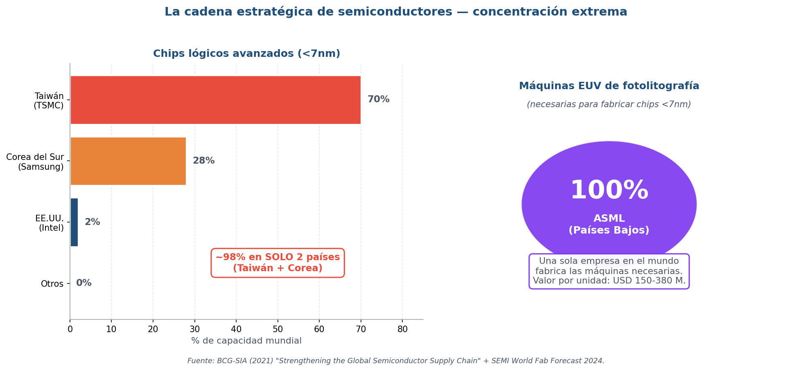
Fuente: BCG-SIA (2021) "Strengthening the Global Semiconductor Supply Chain" + SEMI World Fab Forecast 2024.
- Chips lógicos avanzados (<7nm): TSMC (Taiwán) 70%, Samsung (Corea) 28%, Intel (EE.UU.) 2%
- Máquinas EUV de fotolitografía: ASML (Países Bajos) 100% — única empresa en el mundo
- Diseño: NVIDIA, AMD, Apple, Qualcomm (todos EE.UU.) → diseñan pero NO fabrican
- El resto: hardware/silicio purificado en Japón, Alemania; software de diseño en EE.UU. (Synopsys, Cadence)
- Conclusión: una cadena de USD 600.000 millones depende de 3-4 empresas en 3-4 países
Cierre integrador — Unidad 4
¿El comercio refleja ventajas preexistentes o construye trayectorias de desarrollo desiguales?
Cómo se conectan los enfoques heterodoxos
Tres respuestas a los límites del comercio internacional neoclásico
- 1. Intercambio desigual — Emmanuel: salarios asimétricos → transferencia de valor Norte ↓ Sur
- 2. Ventajas dinámicas — List, Kaldor, Diamand: learning by doing, industria, capacidades → problema stop-go
- 3. Neoschumpeterianos — Cimoli, Porcile, Hidalgo-Hausmann: capacidades tecnológicas, complejidad económica, path dependence
- Pregunta de cierre: ¿El comercio refleja ventajas preexistentes o construye trayectorias de desarrollo desiguales?
¿Quién gana y quién pierde con el comercio?
Cómo fue cambiando la explicación del comercio internacional
- Ricardo: eficiencia y ganancias agregadas — gana el país en su conjunto
- H-O: distribución entre factores — gana el factor abundante, pierde el escaso
- Krugman: economías de escala, variedades — ganan todos los consumidores
- Melitz: firmas heterogéneas — ganan las productivas, pierden las marginales
- Prebisch / Emmanuel: estructuras desiguales — gana el centro, pierde la periferia
- Neoschumpeterianos: capacidades acumuladas — ganan los que ya saben, pierden los que se quedan atrás
- "El comercio internacional no solo asigna recursos: también construye trayectorias de desarrollo."
El comercio también construye trayectorias de desarrollo
- El comercio NO es neutral
- Las ventajas comparativas pueden construirse
- Producir genera aprendizaje
- Las capacidades se acumulan históricamente
- NO todas las actividades generan el mismo dinamismo tecnológico
- La estructura productiva condiciona el desarrollo futuro
- "El desarrollo depende no solo de comerciar, sino de qué capacidades se construyen al comerciar."
Próxima clase: Movilidad de factores, ETN y CGV
Unidad 5 — ¿quién organiza hoy la producción mundial?
- Pregunta central: si las capacidades se acumulan en empresas, ¿quién son esas empresas? ¿quién organiza la producción?
- Bloque 1: movilidad internacional de factores (capital → IED, trabajo → migración) — retomamos FPE de H-O
- Bloque 2: Empresas Transnacionales (ETN) — motivaciones, modos de operación, magnitud global
- Bloque 3: Inversión Extranjera Directa (IED) — patrones mundiales, efectos sobre países receptores
- Bloque 4: introducción a Cadenas Globales de Valor (CGV) — participación, posición, gobernanza
- Texto base: Lugones cap 4 + Gereffi 2001 (cadenas productivas globales) — leer ANTES de la clase
Material complementario
Documentales, podcasts y lecturas para profundizar la U4
- 🎬 Documental "El silencio de los productores" (PBS, 2019) — sobre Embraer y la industria aeroespacial brasileña — youtube.com (buscar "PBS Embraer")
- 📺 Charla Mario Cimoli en TEDx Buenos Aires (2018) — "Las capacidades importan" — 18 min, ideal para entender neoschumpeterianismo
- 🎬 Documental "Chip War" (Bloomberg, 2023) — sobre la cadena global de semiconductores — está en YouTube — Chris Miller (autor del libro homónimo)
- 📺 Atlas of Economic Complexity tour interactivo — atlas.hks.harvard.edu — pueden explorar el ECI de cualquier país
- 🎬 Película "Parásitos" (Bong Joon-ho, 2019) — no es económica, pero muestra la sociedad coreana 60 años después del milagro. Ganadora del Oscar.
- 📺 Diego Hurtado en "Caja Negra" — UNQ TV — sobre INVAP y la ciencia argentina. 30 min, gratuito en YouTube
Lecturas de la Unidad 4
Lo obligatorio para la evaluación
- OBLIGATORIO:
- Lugones, G. (caps 2.2-2.3 y cap 5) — disponible en bibliografia/unidad4/
- Prebisch, R. (1950) "El desarrollo económico de América Latina y algunos de sus principales problemas" — CEPAL
- Diamand, M. (1972) "La estructura productiva desequilibrada argentina" — Desarrollo Económico
- Ocampo, J. A. (2022) "Desarrollo estructuralista y centro-periferia" — CEPAL
- MUY RECOMENDADO:
- Hausmann, Hwang & Rodrik (2007) "What You Export Matters" — Journal of Economic Growth 12(1)
- Hidalgo & Hausmann (2009) "The building blocks of economic complexity" — PNAS 106(26)
- Rodrik, D. (2016) "Premature Deindustrialization" — Journal of Economic Growth 21
- COMPLEMENTARIO:
- Hickel et al. (2022) "Plunder in the Post-Colonial Era" — New Political Economy
- Cimoli, Dosi & Stiglitz (eds.) "Industrial Policy and Development" — Oxford University Press
6 preguntas para guiar la lectura
Estas son las preguntas del quiz inicial de S8 (5 al azar de estas 6) — sobre el contenido de hoy
- 1. Según Emmanuel (1969), ¿por qué los salarios asimétricos entre Norte y Sur generan transferencia de valor, aun cuando los precios de mercado sean los mismos?
- 2. Explique el mecanismo del stop-go argentino según Diamand (1972) y qué rol cumple la estructura productiva desequilibrada en él
- 3. Enuncie las tres leyes de Kaldor y explique por qué implican que la industria es un sector "especial" para el crecimiento
- 4. ¿Qué dice el indicador EXPY (Hausmann-Hwang-Rodrik 2007) y por qué "what you export matters" contradice a Ricardo?
- 5. Según Hidalgo y Hausmann (2009), ¿qué hace que un producto sea complejo y cómo se mide el ECI de un país?
- 6. Según Rodrik (2016), ¿qué es la desindustrialización prematura y por qué es un problema para los países en desarrollo de hoy?
¿Preguntas?
Quedan 10 minutos para repaso y dudas